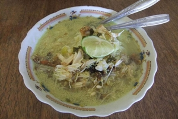
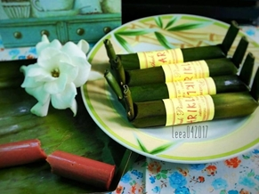
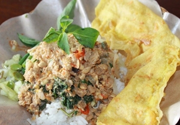
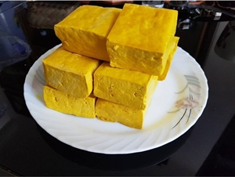
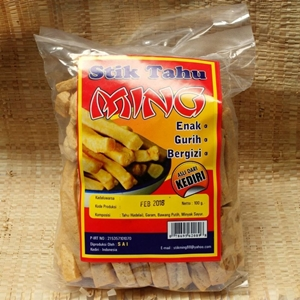

Soto Kediri
Hampir semua daerah di Tanah Air punya soto khas, tak terkecuali Kediri. Soto Kediri mirip seperti soto ayam pada umumnya. Namun, rasanya lebih gurih, karena kuahnya memakai santan.
Gethuk pisang
Sesuai namanya, jajanan khas Kediri ini berbahan dasar buah pisang. Bentuknya memanjang seperti lontong. Rasanya manis, asam, dan legit.
Pecel tumpang
Seperti daerah lainnya di Jawa Timur, Kediri juga terkenal dengan kuliner pecelnya. Nasi pecel biasanya disajikan di atas pincuk daun pisang saat nasi masih mengepul hangat.Kemudian, diberi berbagai macam sayuran segar di atasnya, lalu disiram sambal pecel dan sambal tumpang.
Tahu takwa
Dikenal dengan sebutan Kota Tahu, gak heran kalau banyak kuliner berbahan dasar tahu di Kediri. Salah satunya tahu takwa. Tahu ini sudah menjadi makanan khas Kediri sejak 1912. Tahu takwa punya rasa dan aroma yang gurih. Ketika digoreng, bagian kulit tahu ini akan terasa krispi.
Stik tahu
Kuliner berbahan dasar tahu lainnya yakni stik tahu. Makanan ringan ini diolah dengan cara tradisional dan dengan bumbu rempah alami. Stik tahu ini punya rasa yang gurih dengan tekstur renyah. Dijamin bikin ketagihan!